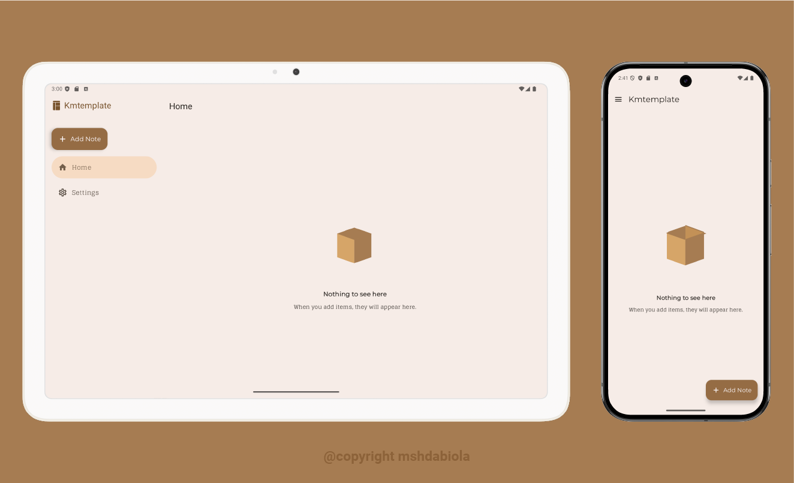

Kotlin Multiplatform Template
The Kotlin Multiplatform Template is a robust project starter with a modern multi-module architecture. It enables seamless code sharing and modular development across JVM, Android, and WASM. Maximize code reuse, maintainability, and scalability for your next cross-platform application.
 Get Desktop AppDownload Android App from GitHub Releases
Core Advantages & Features
-
Multi-Module Architecture:
Clear separation of concerns for a scalable codebase. Manage large projects with ease.
-
Shared Business Logic:
Reuse core logic across JVM, Android, and WASM. Ensures consistency and saves time.
-
Platform-Specific Optimizations:
Optimized solutions for each platform for native performance and user experience.
-
Flexible Android Builds:
Supports Google Play and FossReliant build types for varied distribution.
-
Centralized Build Logic:
Streamline project setup and maintenance with unified plugin and configuration management.
-
Desktop Packaging with Hydraulic Conveyor:
Easily package and distribute desktop apps for Linux, Windows, and Mac.
-
Compose Multiplatform UI:
Build modern, consistent UIs across desktop and Android with declarative Compose.
-
Clean Architecture & Quality Tools:
Built with Clean Architecture for maintainability. Ready for localization, Spotless, Detekt, and Jacoco.
-
Enforced Code Quality:
High standards enforced by Spotless, ktlint, detekt, and custom ktlint rules for design system.
Why Choose This Template?
This template offers a robust, modern, and scalable foundation for your Kotlin Multiplatform projects. It integrates best practices and simplifies cross-platform development. Build high-quality applications with confidence and efficiency.
It's engineered for developers who prioritize code reuse, maintainability, and scalability. Achieve clear separation of concerns for complex applications.